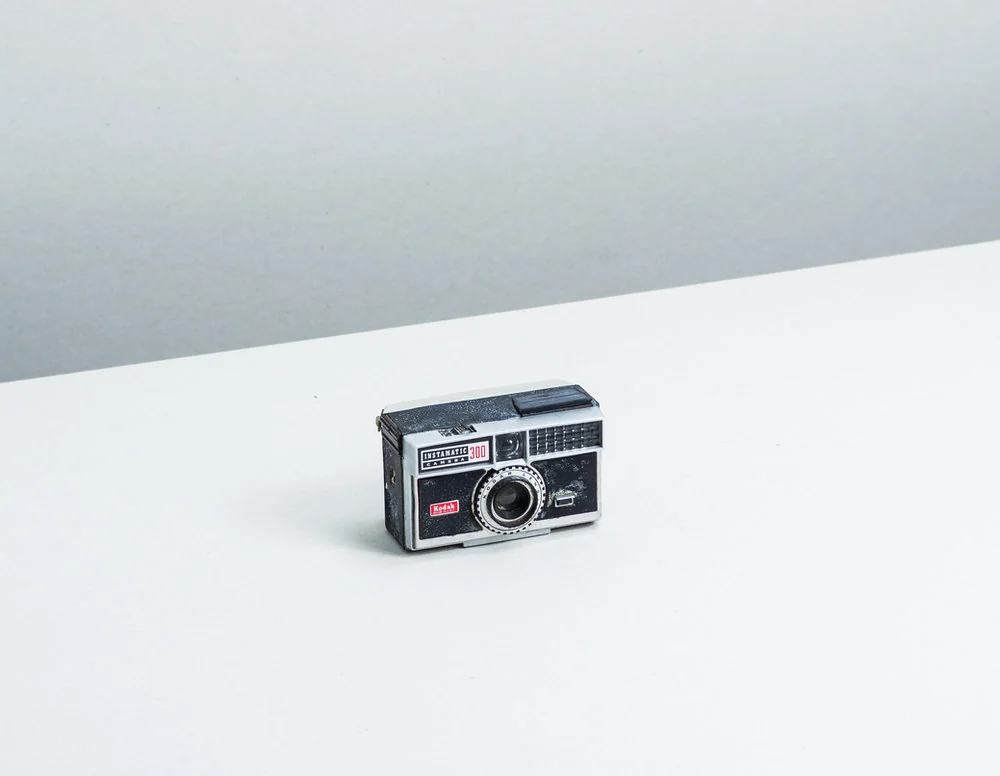
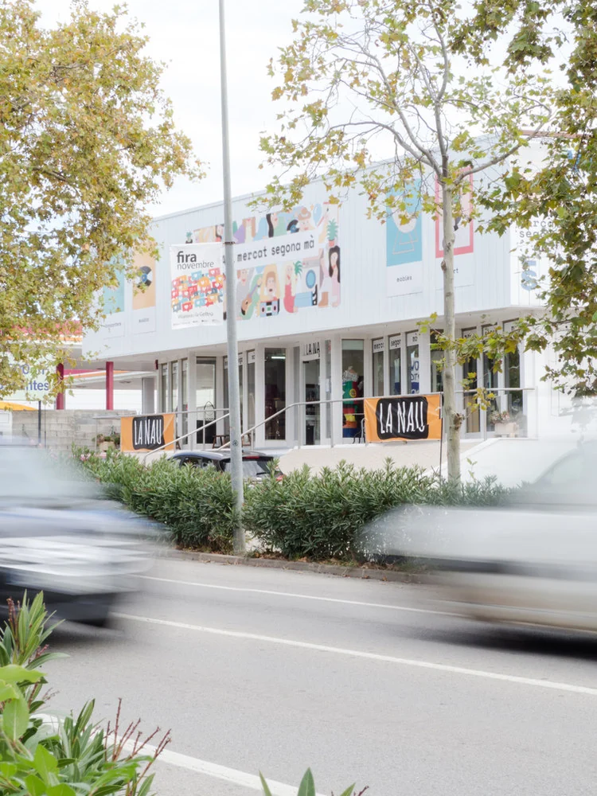
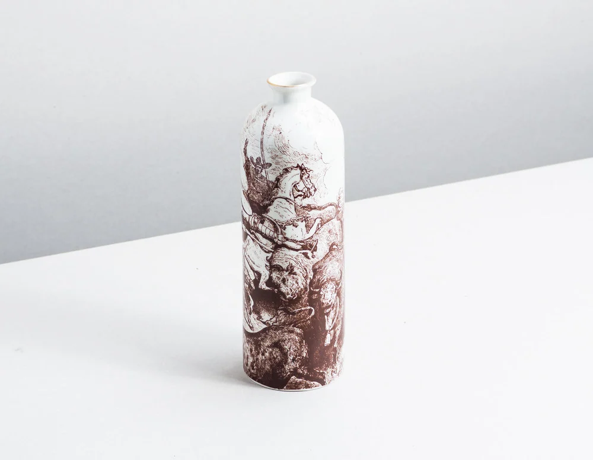
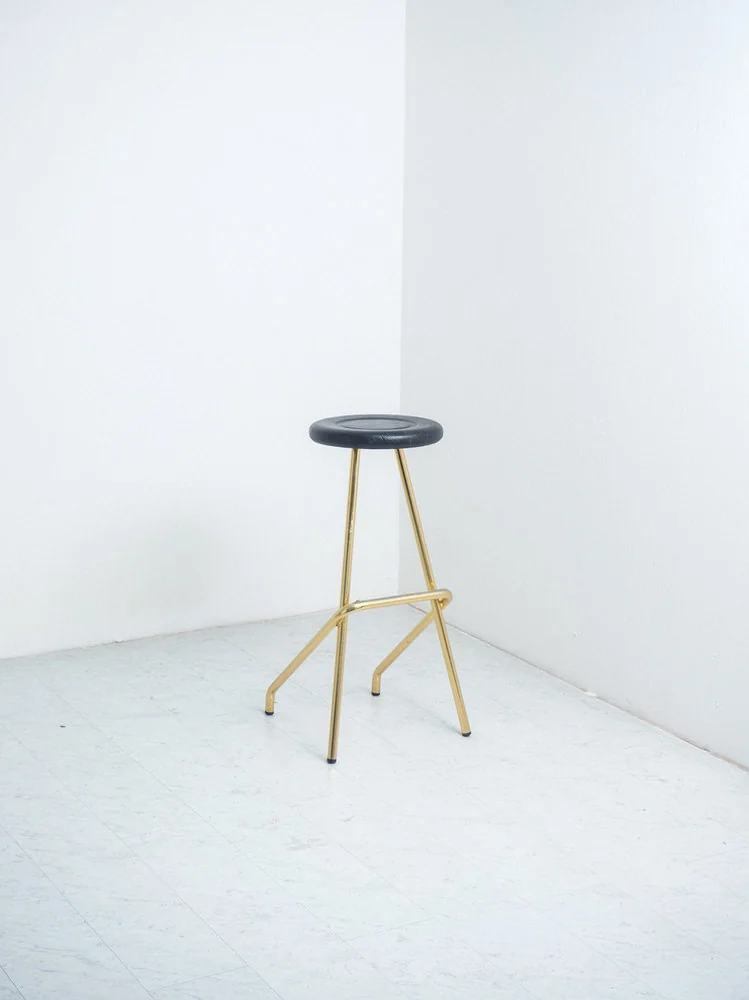

La Nau, mercat de segona mà a Vilanova i la Geltrú
Ven allò que ja no necessites, compra allò que busques o, si ho prefereixes, lloga un espai i ven-ho tu mateix.
Mobles, decoració i antiguitats de segona mà


Sis plantes de segona mà en decoració, antiguitats i col·leccionisme.
Truca per reservar una parcel·la




Vine a veure’ns i descobreix tot això i molt més. T’hi esperem!
Prepara la teva visita a La Nau
La Nau és un mercat de segona mà de Vilanova i la Geltrú. Pots venir a buscar una peça concreta, recórrer les sis plantes per descobrir què hi ha o informar-te sobre com vendre allò que ja no fas servir.
Què hi trobaràs
Les fotografies de la galeria mostren exemples del tipus de peces que pots trobar al mercat, des de mobles i objectes de decoració fins a antiguitats i articles de col·leccionisme. Si t’interessa una peça de la galeria, consulta’n la disponibilitat abans de venir.
Comprar mobles i altres peces de segona mà
Si busques un moble, porta les mides de l’espai on el vols posar. Val la pena mesurar també les portes i els passadissos per on ha de passar. Quan trobis una peça que t’agradi, fixa’t en l’estat dels materials, comprova si les portes o els calaixos s’obren bé i pensa com te l’enduràs. Si busques una càmera analògica, anota el model o el format que t’interessa per poder comparar les peces que vegis.
Vendre articles o llogar una parcel·la
Si tens objectes que ja no necessites i vols donar-los una segona vida, pots trucar a La Nau per explicar què vols vendre i preguntar quina opció et convé. Tenir a mà unes fotografies, les mides i una descripció de l’estat dels articles pot ajudar-te a explicar-ho.
Si prefereixes vendre’ls tu mateix, pots llogar una parcel·la al mercat. Truca abans de desplaçar-te per consultar la disponibilitat, el preu i les condicions de la reserva. Digues quins articles hi vols portar i quin espai calcules que necessitaràs, sobretot si es tracta de mobles o peces voluminoses.
Com arribar-hi i quan venir
Ens trobaràs a l’avinguda d’Eduard Toldrà, 58, a Vilanova i la Geltrú. A Horaris i contacte tens l’adreça, el telèfon i un enllaç per obrir les indicacions al mapa. El dilluns obrim a la tarda, de dimarts a divendres tanquem al migdia i el dissabte obrim al matí. El diumenge el mercat és tancat.
Si vens de fora de Vilanova o et cal organitzar el transport d’una peça gran, comprova l’horari abans de sortir. Per resoldre dubtes abans de la visita, pots trucar-nos o escriure’ns a info@lanaumercatsegonama.com.